Über den Menüpunkt
1 WinLine PPS
1 Stammdaten
1 Export Stückliste detailliert
können Handels- und Produktionsstücklisten exportiert werden.
Achtung
Damit das Programm ordnungsgemäß genutzt werden kann ist es zwingend notwendig, dass eine Export-/Importvorlage vorhanden ist (nähere Informationen siehe Feld "Vorlage").
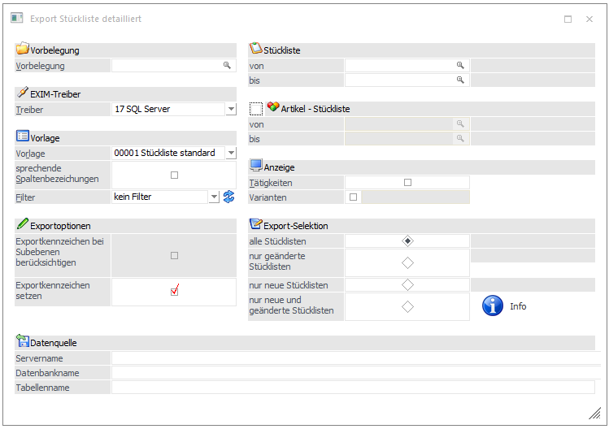
Folgende Einstellungen können bzw. müssen getroffen werden:
Ø Vorbelegung
Mit Hilfe von Vorbelegungen können die im Programm "Export Stückliste detailliert" getroffenen Einstellungen abgespeichert bzw. geladen werden.
ü Um eine Vorbelegung zu erstellen
wird in dem Feld "Vorbelegung" eine Bezeichnung (alphanumerisch) hinterlegt.
Anschließend werden die gewünschten Einstellungen getroffen. Die Abspeicherung
der Vorbelegung findet automatisch beim Drücken des Buttons  statt.
statt.
ü Um eine Vorbelegung zu laden wird entweder die Bezeichnung der Vorbelegung direkt eingegeben oder über den "EXIM-Vorbelegung-Matchcode" (F9-Taste bzw. Anklicken der Lupe) eine entsprechende Vorbelegung ausgewählt.
Ø Stückliste von/bis
An dieser Stelle kann eingrenzt werden, welche Stückliste(n) exportiert werden sollen.
Ø Artikel-Stückliste
Der Bereich "Artikel-Stückliste" gliedert sich in zwei Punkte auf:
ü Checkbox
Durch Aktivieren der Checkbox kann festgelegt werden, ob beim Export auch der Handels- bzw. Produktionsartikel (Checkbox aktiviert) oder nur die Stückliste (Checkbox deaktiviert) berücksichtigt werden sollen.
Beispiel
Es existiert der Produktionsartikel "10007", welcher die Stückliste "FAHRRAD" beinhaltet.
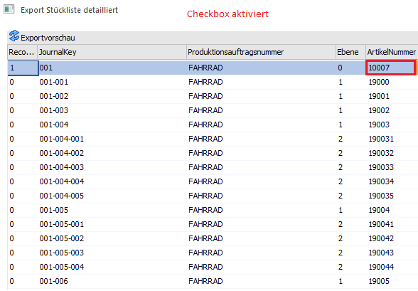
Hinweis
Wenn die Stückliste "FAHRRAD" in mehreren Handels- bzw. Produktionsartikeln vorkommt, dann wird die Stückliste bei aktivierter Checkbox auch mehrfach (pro Handels- bzw. Produktionsartikel) ausgegeben.
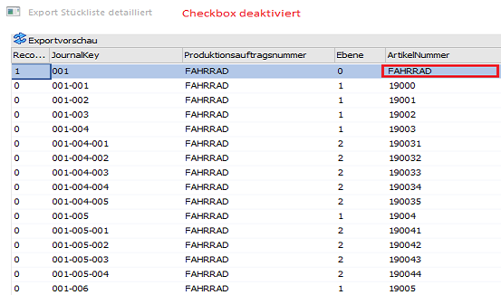
ü von/bis
An dieser Stelle kann eingrenzt werden, welche Handels- bzw. Produktionsartikel incl. deren Stücklisten exportiert werden sollen.
Ø Tätigkeiten
Durch die Aktivierung der Checkbox kann definiert werden, dass auch die Tätigkeiten der Produktionsstücklisten exportiert werden sollen.
Beispiel
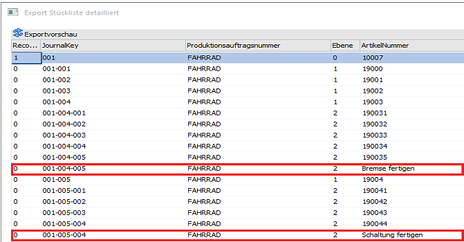
Beispiel
Im Exportfenster wurde die Option "Varianten" aktiviert und auf den Variantenstring "C****" eingegrenzt.
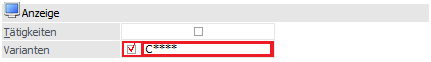
Bei dem Export wird nun nicht mehr der Fahrradrahmen "19000" (Variante *), sondern der altmodische Rahmen "19000_C" (Variante C) ausgegeben.
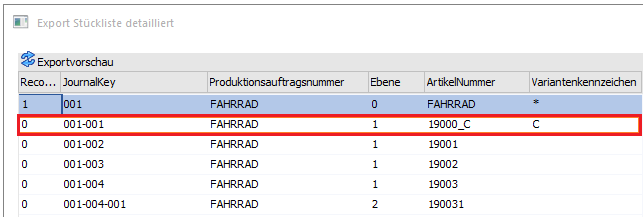
Ø Selektion
An dieser Stelle wird angegeben, welche Aktualität die zu exportierenden Stücklisten haben sollen. Folgende Möglichkeiten stehen zur Auswahl:
ü Alle Stücklisten
ü Nur geänderte Stücklisten (seit dem letzten Export)
ü Nur neue Stücklisten (seit dem letzten Export)
ü Nur geänderte und neue Stücklisten (seit dem letzten Export)
Hinweis
Durch Drücken des Info-Buttons wird angezeigt, wie viele Stücklisten in den verschiedenen Kategorien aufgrund der momentan getroffenen Selektion für den Export vorhanden wären.
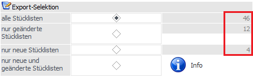
Ø Exportkennzeichen bei Subebenen berücksichtigen
Bei aktivierter Checkbox wird bei allen Subebenen der Stücklisten (die exportiert werden) das entsprechende Kennzeichen gesetzt, damit beim nächsten Export nur die neuen oder veränderten Subebenen erkannt werden können.
Ø Exportkennzeichen setzen
Ist diese Checkbox selektiert, wird bei allen Stücklisten, die exportiert werden, das entsprechende Kennzeichen gesetzt, damit beim nächsten Export nur die neuen oder veränderten Stücklisten erkannt werden können.
Ø Vorlage
Durch die Vorlage wird festgelegt, welche Datenfelder in welcher Reihenfolge exportiert werden sollen. Die Erstellung solch einer "Export-/Importvorlage" findet im Menüpunkt
1 WinLine Start
1 Vorlagen
1 Vorlagen Anlage
1 Export-/Import-Vorlagen
1 Vorlagentyp "Stückliste detailliert"
statt.
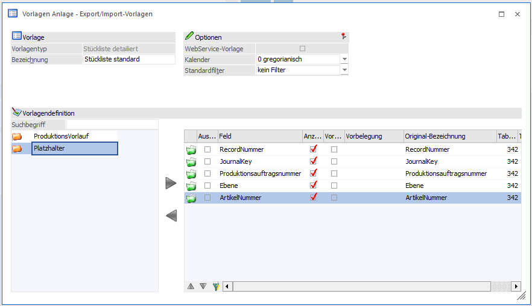
Ø Vorlagenfilter
Durch Auswahl eines Vorlagenfilters aus der Auswahllistbox (hier werden alle bereits angelegten Filter für den ausgewählten Stammdatentyp angezeigt) kann die Ausgabe der Datensätze auf bestimmte Datensätze beschränkt werden.
Die Anlage der Filter erfolgt durch Anklicken des Filter-Buttons, der sich neben dem Eingabefeld befindet - damit werden Sie durch den Filter-Assistenten geführt, der bei der Anlage eines Filters hilft. Wird ein neuer Filter angelegt, wird dieser automatisch ins Eingabefenster gestellt und kann natürlich durch einen anderen (bzw. keinen Filter) aus der Auswahllistbox ersetzt werden.
Ø ODBC-Treiber
Hier kann ausgewählt werden, welches Datenformat beim Export erzeugt werden soll. Zur Auswahl stehen alle ODBC-Treiber, die im System installiert sind, z.B.:
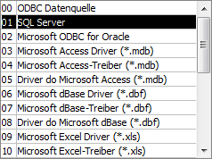
Hinweis
Je nachdem, welcher Treiber ausgewählt wird, ändern sich entsprechend die Eingabemöglichkeiten unter dem Bereich "Datenquelle".
Ø Sprechende Spaltenbezeichnungen
Aktiviert man die Checkbox "Sprechende Spaltenbezeichnungen" so erhalten die Überschriften der Spalten, innerhalb der durch den Export entstandenen Dateien bzw. Tabellen, jeweils die Spaltenbezeichnungen, die auch in der Vorlage definiert wurden.
Beispiel
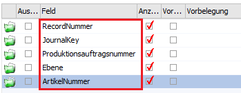
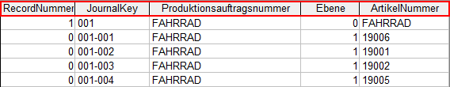
Wird die Checkbox nicht aktiviert, so werden die Spalten so benannt, wie sie auch in den Tabellen der WinLine-Datenbank betitelt sind.
Beispiel
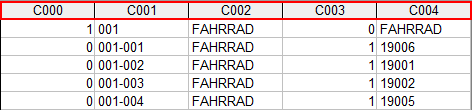
Ø Datenquelle
An dieser Stelle werden die zu erstellenden Exportdateien bzw. -tabellen definiert. Was genau hinterlegt werden muss hängt von dem gewählten ODBC-Treiber ab.
Beispiel
Wird für den Export der Datensätze der ODBC-Treiber "Microsoft Access Driver (*.mdb)" gewählt, muss der Datenbankpfad, der Datenbankname sowie der Tabellenname angegeben werden.
Achtung
"Datenbankpfad" und "Datenbankname" müssen in Windows existieren. Die Tabelle kann bereits bestehen, muss aber nicht (wird dann automatisch angelegt).
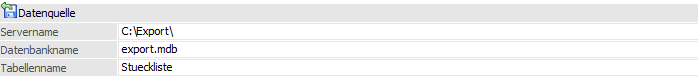
Beispiel
Wird für den Export der Datensätze der ODBC-Treiber "SQL Server" gewählt, muss der SQL-Servername, der Datenbankname sowie der Tabellenname angegeben werden.
Achtung
"Servername" und "Datenbankname" müssen in Windows existieren. Die Tabelle kann bereits bestehen, muss aber nicht (wird dann automatisch angelegt).
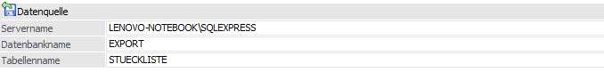
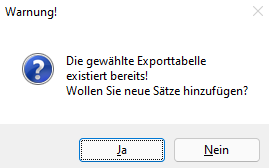
Hinweis
Je nachdem, welcher ODBC-Treiber verwendet wird, kann es zu einem ungewünschten Verhalten des Exports kommen, wenn Sonderzeichen im Bereich der Datenquelle verwendet werden. Aus diesem Grund wird, wenn solche Sonderzeichen verwendet werden, eine entsprechende Warnmeldung ausgegeben.
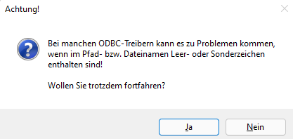
Buttons
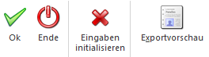
Ø OK
Durch Drücken dieses Buttons wird der Export gestartet. Sollte mit einer Vorbelegung gearbeitet werden erfolgt zusätzlich noch eine Abfrage, ob die Änderungen in der Vorbelegung abgespeichert werden sollen.
Ø Ende
Der Programmbereich wird verlassen. Wurde der OK-Button noch nicht gedrückt werden die Änderungen nicht in der Vorbelegung gespeichert.
Ø Exportvorschau
Nach Drücken des Buttons "Exportvorschau" werden sämtliche Datensätze, die nach den bisher getroffenen Einstellungen exportiert werden wurden, in Form einer Tabelle dargestellt. Welche Spalten dargestellt werden hängt, wie auch beim richtigen Export, von der hinterlegten Vorlage ab.
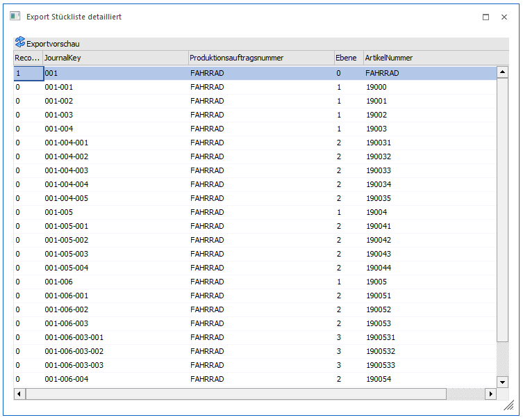
Hinweis
Durch Anklicken des OK-Buttons kann der Export auch an dieser Stelle direkt gestartet werden. Über den Ende-Button gelangt man wieder in das ursprüngliche Exportfenster zurück.
Ø Eingaben initialisieren
Durch Drücken dieses Buttons werden alle Eingaben und Selektionen im Exportfenster gelöscht (z.B. auf welchen Datenbankpfad oder Tabellennamen ausgegeben werden soll) und somit auf den Standard zurückgesetzt.
Hinweis
Bei der Verwendung einer Vorbelegung erfolgt zusätzlich eine Abfrage, ob die gerade hinterlegte Vorbelegung gelöscht werden soll.
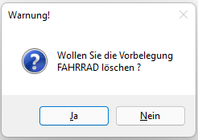